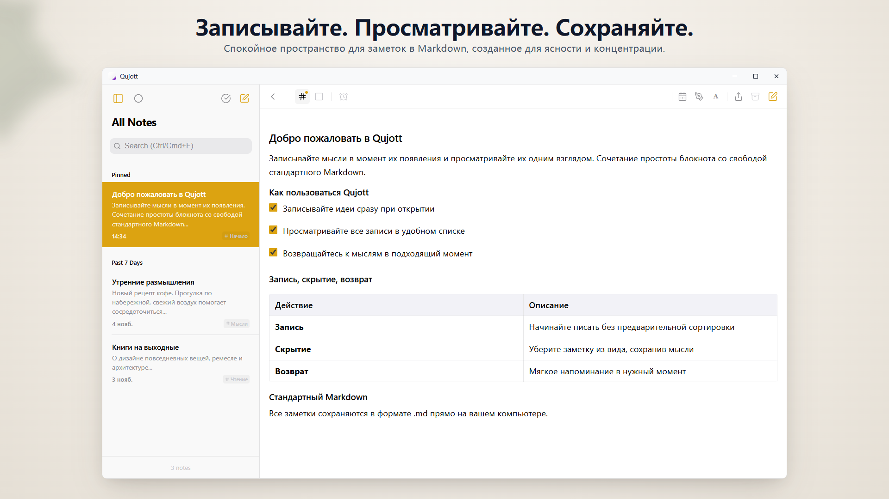
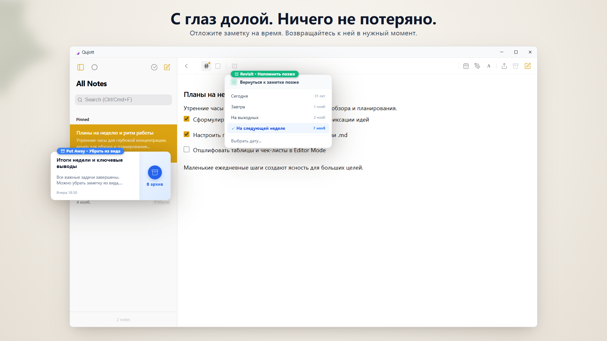
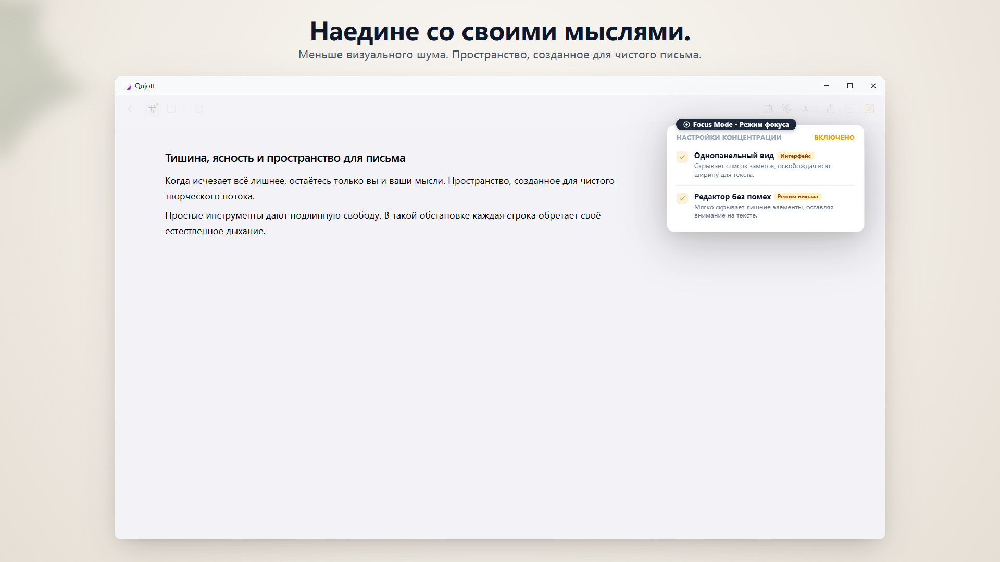
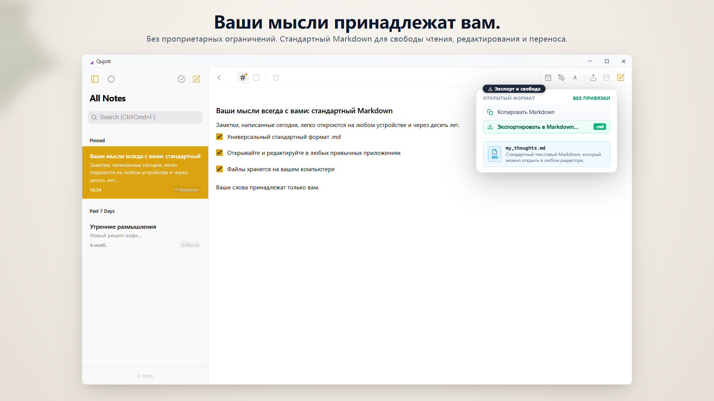
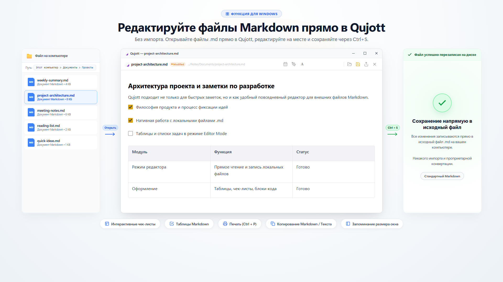
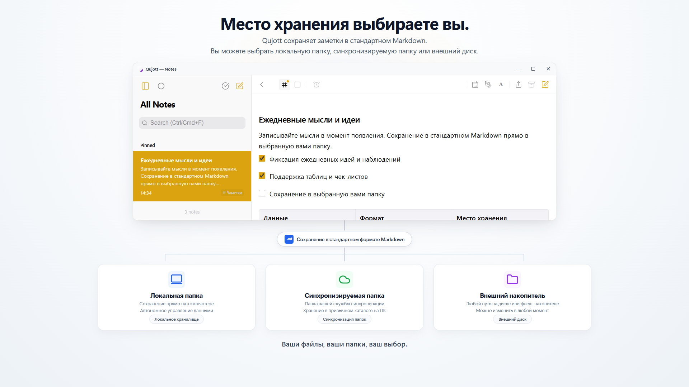
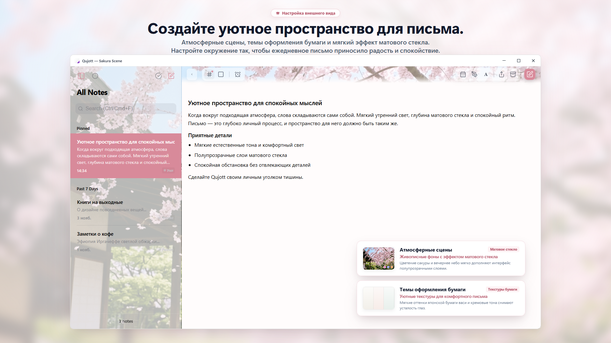

Qujott
Записывайте мысли легко,
возвращайтесь к ним в удобный момент.
Qujott объединяет легкость и наглядность бумажного блокнота со свободой текстового редактора в простом цифровом формате.
Порядок наведете позже. Главное — держите мысли под рукой.
Поддержка стандартного формата Markdown. Сохраняйте и редактируйте заметки как обычные текстовые файлы там, где удобно вам.

Спокойное двухпанельное пространство, где ваши мысли и список заметок гармонично находятся перед глазами
Как бумажный блокнот на краю рабочего стола.
Qujott не предназначен для перегруженного управления задачами или создания громоздких баз знаний.
Как и бумажная записная книжка рядом с клавиатурой, приложение создано лишь для одной цели: начать писать в ту же секунду, когда родилась мысль.
Вам не нужно заранее думать о папках или обязательно присваивать теги.
Просто зафиксируйте пришедшие слова и сохраните их рядом. Структурировать записи можно позже в спокойном темпе.
Убирайте записи с глаз и возвращайтесь к ним вовремя.
Закончив заметку, не обязательно ее удалять — спрячьте ее с помощью «Отложить» (Put Away), сохранив рабочее пространство чистым.
С функцией «Вернуться» (Revisit) заметка мягко появится вверху списка сегодня, завтра или на следующей неделе. Без назойливых уведомлений и спешки.

Освобождайте рабочий экран, не удаляя важные записи. Заметка спокойно появится вверху списка в выбранный момент: сегодня, завтра или на следующей неделе.
Сосредоточьтесь на словах без лишнего шума.
Скройте боковую панель и переключитесь в однопанельный «Режим фокуса» (Focus Mode).
Интерфейс убирает все второстепенные элементы, оставляя вас наедине с мыслями и чистым текстом.

Однопанельный минималистичный интерфейс уменьшает визуальные отвлечения и помогает полностью сосредоточиться на тексте и размышлениях.
Ваши слова остаются в вашем распоряжении.
Все заметки сохраняются в открытом стандартном формате Markdown (.md).
Никакой привязки к закрытым системам. Вы можете в любой момент открыть, отредактировать, экспортировать или скопировать файлы в Проводнике Windows или совместимом текстовом редакторе.

Все заметки сохраняются в стандартном формате Markdown (.md). Вы всегда можете свободно открыть, изменить, экспортировать и создать резервную копию в любом совместимом редакторе.
Открывайте и редактируйте локальные файлы Markdown напрямую.
Открывайте существующие файлы Markdown на вашем компьютере прямо в Qujott, вносите правки и сохраняйте изменения клавишами Ctrl+S в исходный файл.
Без процедур импорта и конвертации форматов. Удобный и легкий редактор для повседневных задач.

Открывайте и редактируйте файлы Markdown прямо в Qujott с сохранением изменений в исходный файл по Ctrl+S. Без импорта и смены формата.
Место хранения выбираете только вы.
Укажите любую папку на компьютере для хранения заметок: локальную директорию, папку облачной синхронизации или внешний накопитель.
Без создания учетных записей — файлы сохраняются именно там, где решили вы.

Свободно выбирайте место хранения: локальная папка на ПК, синхронизируемая папка или внешний накопитель. Файлы сохраняются в выбранной папке без необходимости создавать учетную запись.
Оформите пространство для записей по своему вкусу.
Атмосферные сцены «Atmosphere Scenes» (например, цветущая сакура Sakura), эффект матового стекла и бумажные текстуры создают приятное настроение для ежедневных заметок (дополнение Qujott Pro).
Также доступно масштабирование интерфейса (от 80% до 160%), чтобы настроить удобный для вас масштаб отображения под ваш экран.

Дополнение Qujott Pro позволяет настроить рабочее пространство: темы бумаги, атмосферные сцены (например, Sakura) и эффект матового стекла создают спокойную обстановку для творчества.